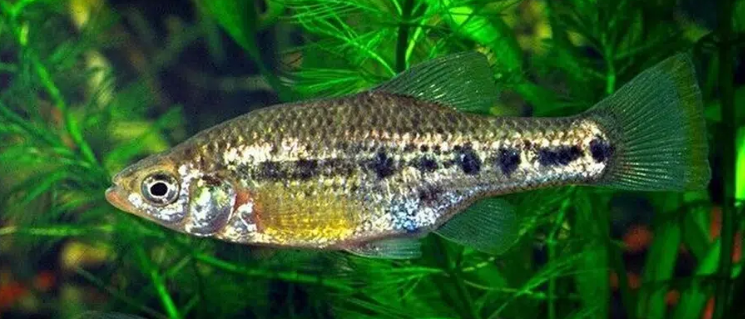

Systématique
- Ordre : Cyprinodontiformes
- Famille : Goodeidae
- Genre : Chapalichthys
- Espèce : C. encaustus
- Auteur : (Jordan & Snyder, 1899)

Chapalichthys encaustus est un poisson vivipare robuste appartenant à la famille des Goodeidae. Originaire du bassin du lac Chapala au Mexique, il appartient à un genre qui compte trois espèces reconnues. Il est souvent considéré comme l'espèce la plus élancée et la plus petite de son genre, bien qu'il reste un poisson de taille respectable pour un aquarium domestique.
La taille adulte oscille généralement entre 6 et 7 cm pour les mâles, tandis que les femelles peuvent atteindre 8 à 10 cm. Le corps est comprimé latéralement, assez haut, avec un profil dorsal légèrement convexe. Sa coloration est caractéristique : une robe argentée à gris perle parsemée de nombreuses petites taches sombres irrégulières sur les flancs. Une bande terminale jaune ou orange vif borde souvent la nageoire caudale des mâles, soulignée par une ligne subterminale noire.
Contrairement à beaucoup de ses cousins goodeidés, il n'est pas actuellement considéré comme en danger immédiat, mais son habitat subit une pression constante due à l'eutrophisation et à la baisse du niveau d'eau du lac Chapala.
Chapalichthys encaustus est une espèce grégaire et très active. En milieu naturel, on le trouve souvent en grands groupes dans les zones peu profondes des lacs, proches des rives où la végétation est présente. C'est un nageur infatigable qui occupe tous les niveaux de l'aquarium.
Au niveau social, il montre un tempérament vif mais généralement pacifique envers les autres espèces de taille similaire. Entre mâles, des parades d'intimidation sont fréquentes mais rarement violentes. Il est conseillé de maintenir cette espèce en groupe (6 individus minimum) pour observer son comportement social naturel et répartir l'agressivité lors des parades nuptiales.
Mode : Vivipare matrotrophe (famille des Goodeidae).
La reproduction suit le schéma classique des Goodeinae. Les embryons se développent à l'intérieur de l'ovaire de la femelle et sont nourris via des trophotaeniae. Le mâle possède un andropodium bien visible pour la fertilisation interne. La gestation est relativement longue, durant environ 50 à 60 jours.
Une femelle adulte peut donner naissance à des portées importantes, allant de 20 à 60 alevins selon sa taille. Les alevins naissent très grands (environ 15 mm) et sont capables de consommer immédiatement les mêmes nourritures que les parents, bien que broyées plus finement. Les adultes ne pratiquent généralement pas de cannibalisme excessif envers leurs petits si l'espace est suffisant et bien planté.
Dimorphisme sexuel : Le mâle est plus petit et plus svelte que la femelle. Il possède un andropodium (premiers rayons de la nageoire anale séparés par une encoche). Les nageoires du mâle, notamment la dorsale et la caudale, sont souvent plus colorées avec des liserés jaunes/oranges et noirs plus marqués.
Espérance de vie : 3 à 5 ans en aquarium.
Il habite principalement le lac Chapala, le plus grand lac du Mexique, situé dans l'État de Jalisco. On le retrouve également dans certains cours d'eau connectés au bassin du Rio Lerma. Son habitat typique consiste en des eaux calmes, riches en sédiments et en algues, avec une température fluctuant selon les saisons.
L'eau du lac Chapala est naturellement dure et alcaline. Le substrat est majoritairement boueux ou sableux. La présence de végétation flottante et de plantes comme Eichhornia ou Potamogeton offre des zones de refuge et de nourrissage essentielles.
Répartition

Origine naturelle :
- Mexique : Bassin du lac Chapala (Jalisco et Michoacán).
- Bassin du Rio Lerma inférieur.
- Endémique de cette région centrale du Mexique.
C'est une espèce assez commune dans le commerce spécialisé des Goodeidae. Bien qu'elle ne soit pas en danger critique, la surveillance des populations sauvages est nécessaire face à l'urbanisation croissante autour du lac.
Paramètres de maintenance
Température : 18 à 25 °C. Une baisse nocturne ou saisonnière est bénéfique.
pH : 7,5 à 8,5 (eau alcaline).
GH : 10 à 25 °dGH (eau dure).
Courant : Faible à modéré.
Volume conseillé : Minimum 100 L pour un groupe, compte tenu de leur activité de nage incessante.
Régime alimentaire
Régime : Omnivore à tendance insectivore et algivore.
En aquarium, il accepte tout type de nourriture : paillettes, granulés, mais aussi et surtout des proies vivantes ou congelées (vers de vase, daphnies).
Un apport en matière végétale (spiruline, algues vertes naturelles dans le bac) est fortement recommandé pour conserver un bon transit intestinal et des couleurs vives.